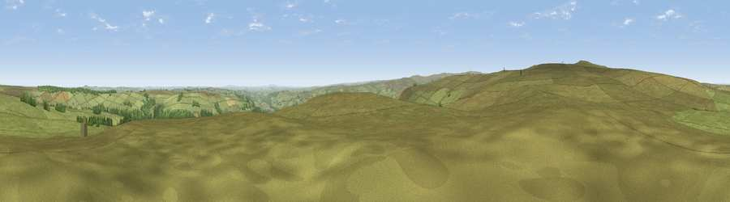

Viewpoint near Frosterley
#10558 in England · top 18% of its area beats it · near FrosterleyThe view, rendered

A 360° render of this exact spot computed from the terrain model, tree cover and land cover — summer colours, afternoon light, calibrated against photographs of famous viewpoints. Real trees, hedges and buildings will differ in detail.
The panorama
Grey silhouette: terrain skyline in each direction (720 bearings, Earth curvature and refraction included). Dashed green: skyline with trees (+15 m) and buildings (+8 m) as obstacles. Blue strip: how far the ground is visible on each bearing.
Where the view opens
Wedge length = distance to the farthest visible ground on that bearing (vegetation-aware). Rings at 10, 25 and 50 km.
What fills the view
94% grassland · 4% woodland · 1% cropland
Angular shares of the visible panorama (visual magnitude), not map area. Landscape diversity 0.12 (0–1 Shannon).
Key numbers
More beautiful places nearby
The staircase of upgrades: each row has a higher view potential than everything closer. Driving times are estimates from straight-line distance, calibrated against real road routing — check an actual route before setting out.
| Place | Direction | Drive | Score |
|---|---|---|---|
| Fatherley Hill | SW · 2 km | ~6 min | 66.7 |
| Collier Law | WNW · 3 km | ~7 min | 71.7 |
| Pontop Pike | NE · 16 km | ~28 min | 77.8 |
| Little Dun Fell | WSW · 35 km | ~53 min | 78.4 |
| Cross Fell | W · 36 km | ~55 min | 78.7 |
| Viewpoint near Cumrew | WNW · 49 km | ~70 min | 78.8 |
| Viewpoint near Lazenby | ESE · 57 km | ~79 min | 82.1 |
| Viewpoint near Lazenby | ESE · 57 km | ~79 min | 86.4 |
54.76414, -1.93664 · source: screening · position refined by local search. Computed location — check access rights before visiting.